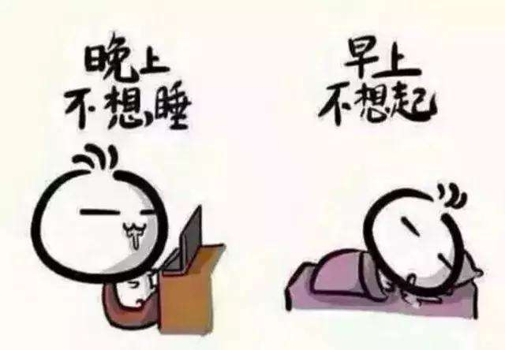
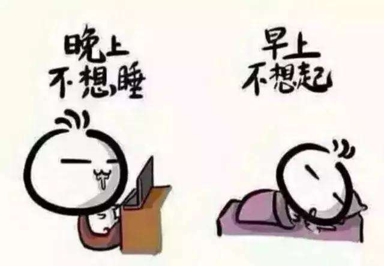

报复性熬夜
1.再苦的咖啡，我都变成了香的，黑夜，我慢慢熬。
2.从什么时候开始习惯熬夜的？从迷恋上第一款网游，追的第一部剧，还是沉溺在莫须有的感情里？
3.唯一不习惯的习惯就是熬夜的习惯
4.晚上难得有属于自己的时间，总想着弥补回来。
熬夜爽一时被迫性熬夜
压力大而睡不着(情感压力，工作学习压力)。
很多人说，等到睡在我喜欢的人的怀里就不熬夜了。
 熬的满身疲惫熬夜小贴士
所以不要再熬夜了吧，就算是为了省钱，也为了美美的睡在喜欢的人怀里
1.再苦的咖啡，我都变成了香的，黑夜，我慢慢熬。
2.从什么时候开始习惯熬夜的？从迷恋上第一款网游，追的第一部剧，还是沉溺在莫须有的感情里？
3.唯一不习惯的习惯就是熬夜的习惯
4.晚上难得有属于自己的时间，总想着弥补回来。
熬夜爽一时压力大而睡不着(情感压力，工作学习压力)。
很多人说，等到睡在我喜欢的人的怀里就不熬夜了。
 熬的满身疲惫所以不要再熬夜了吧，就算是为了省钱，也为了美美的睡在喜欢的人怀里